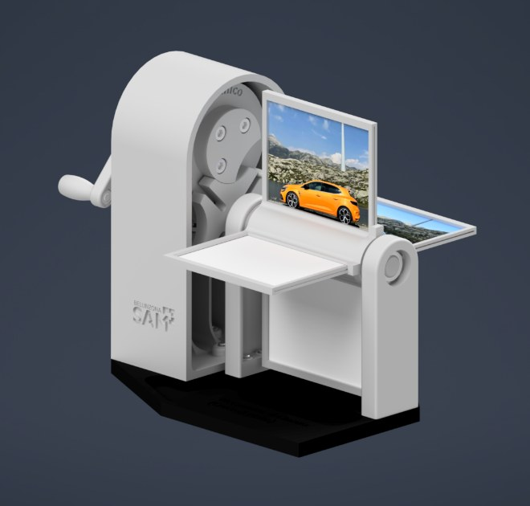

Caricamento del modello 3D…
Trascina la manovella per cambiare foto · trascina altrove per ruotare la vista
Trascina la ruota motrice e guarda la croce avanzare a scatti.
Pagina di Julian Fenaroli
Tutto il meccanismo, in un colpo d'occhio.
Si illumina nell'animazione qui sopra.
Mentre il perno è fuori dalla cava, è il disco di bloccaggio a tenere ferma la croce. Senza il disco la croce è libera e le vibrazioni la spostano.
Si sceglie il numero di stazioni n, cioè quante posizioni di sosta deve avere la ruota condotta (di solito 4, 6 o 8 cave); ogni cava si sposta di α = 360°/n a ogni ciclo. Poi si fissa l'interasse C tra la ruota motrice (la manovella) e la croce: il raggio su cui è montato il perno vale R = C · sin(180°/n) e la distanza dal centro della croce al perno, quando entra nella cava, vale r = C · cos(180°/n). Con n = 4 i due raggi sono uguali (≈ 0,71 · C).
Scorri di lato →
Il meccanismo costruito per l'Open Day.

Il dispositivo è un espositore di foto: la manovella fa girare la ruota motrice, nascosta nel carter, e la croce di Malta a 4 cave fa avanzare di 90° un tamburo con quattro pannelli. A ogni giro di manovella compare una nuova foto, che poi resta ferma, bloccata dal disco della motrice.
Con una croce a 6 cave, di quanto gira la croce a ogni giro della ruota motrice?
Open Day · Scuola d'arti e mestieri Bellinzona
← Tutti i meccanismi